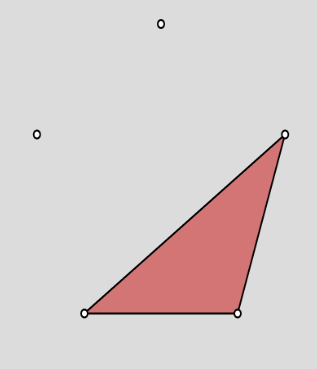
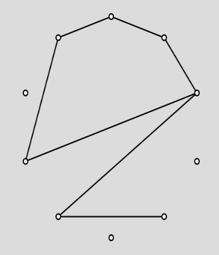
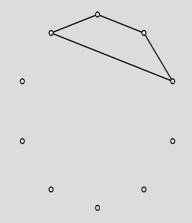
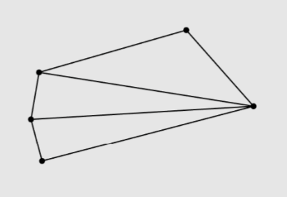
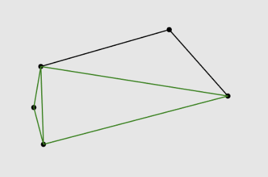
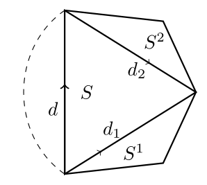

We aim to explain perfect-information combinatorial games defined on planar triangulations of finite point sets. We will explore three main types of such games: constructing, transforming, and marking triangulations.
In this category, players construct a triangulation T(S) on a given point set S. Starting from no edges, players R and B play in turn by drawing one or more edges in each move.Both the games shown start with a convex set of points S.
goal : be the first player to completes one empty triangle :
Monochromatic Single Triangle game
In this game the player who draws the last edge win.It is easy to notice that a player should never use a vertex thats already used as it means that the next move a triangle can be formed. From this we can see that each time a diagonal pq is drawn, the set is divided in two separate sets with cardinality n₁ +n₂ = n - 2 with n the cardinality of the set.
From those observations the authors show that this game is an instance of a Dawson's Kayles game and use it to show that this game is a second-player winner game for n ≡ 5, 9, 21, 25, 29 (mod 34) and for n = 15 and n = 35
When n is even the winning strategy consists of first drawing the diagonal that splits the set in two then each player play the symetric move to the other unless there is a winning move. For n odd the winning strategy is just the strategy for a Dawson's Kayles game.
As seen in the papers result the winner is know as soon as we have the cardinality of the set. meaning it can be computed in O(1) time. As for the winning strategy both cases are solved in O(n) time.
Monochromatic Complete Triangulation game
In this game the player who forms the most triangles win. There are different type of edges that can be added, closing edges that complete a triangle, merging edges that connect two components and redundant edges that join points in the same component without forming triangles. The number of merging edges is n - 1.



From those observations the authors show that the winning algorithm is the greedy one.It first show that no redundant edges should be formed, as a triangle shoud be closed as soon as possible to block the other player from forming it and keeping the same number of merging edges. Then it shows that the player should always play a closing edge if possible, then if not possible draw the merging edge with the lowest weight.
This lead to three results: When n is odd the first player wins. when n is even the first player can force a tie. when n is even the second player can force a tie.
As seen in the papers result the winner is know as soon as we have the cardinality of the set. meaning it can be computed in O(1) time. As for the winning strategy it consists in playing the greedy move meaning that meaning that each move can be computed in O(n) as we have to check for closing edges first then find the lowest weight merging edge.
In this category, we start from a triangulation T(S) of a set of points S . The player can flip an edges under certain conditions. For exemple, in Green Solitaire games, an edge can be flipped only if it is black and if it is flippable, meaning it must be the diagonal of a convex quadrilateral formed by two adjacent triangles. When an edge is flipped, it is replaced by the other diagonal of that quadrilateral, creating two new triangles and in the case of Green Solitaire games, edges of thoses new triangles become green.
Goal: Flip black flippable edges so that, at the end of the game, all edges of the triangulation are green.
Flip an black edge inside a convexe quadrilateral by clicking on it
As you may have noticed by playing a few games, it is not always possible to win. For example, a triangulated convex pentagon cannot be fully colored green.


However, for a triangulation of n points in convex position, it is possible to decide in advance whether there is a winning sequence and to find a strategy to obtain it, both in time O(n).
Because the triangulation is of a convex polygon, every diagonal is flippable and every quadrilateral formed by two adjacent triangles is convex. This ensures that the recursive decomposition along diagonals is always valid and produces a clean tree structure matching the dual graph.
The idea is to take an oriented diagonal d and look at the triangulated subpolygon S on its right. Inside S, there are exactly two diagonals d₁ and d₂ that, together with d, form a triangle. These diagonals define two subpolygons S₁ and S₂ (in counterclockwise order). We can apply the same construction recursively to S₁ and S₂, obtaining smaller subpolygons S₁,₁, S₁,₂, S₂,₁, S₂,₂, and so on, until we reach single triangles on the boundary.

We define n(S) for any subpolygon S as the maximum number of edges that can be turned green by flipping only edges strictly inside S, assuming all edges in S start black. If S is a single triangle, there are no flippable edges, so n(S) = 0.
With d₁ and d₂, there are only three choices: we flip d₁, we flip d₂, or we flip neither. We cannot flip both, because once one is flipped the other is no longer flippable. Flipping d₁ makes 5 edges green (the new diagonal and the four edges of its quadrilateral) and then we continue independently inside the resulting subpolygons. This gives:
Flipping d₂ gives:
If we flip neither, the only possible flips are inside S₁ and S₂, giving:
Thus the recurrence is:
Because the triangulation is in convex position, each subpolygon is explored only once, and each value n(S) depends on a constant number of smaller subpolygons. This allows us to find all values of n(S) in time O(n).
By recording which option (flip d₁, flip d₂, or flip neither) gives the maximum for each subpolygon, we can reconstruct an optimal sequence of flips in another O(n) time. Evaluating n(S) for the whole polygon gives the maximum number of edges that can be turned green, and comparing this number with the total number of edges tells us whether it is possible to color all edges green.
Goal: Flip black flippable edges so that, at the end of the game, the number of green edges is strictly larger than the number of black edges.
Flip an black edge inside a convexe quadrilateral by clicking on it
This game shows that, for a triangulation in general position, the situation becomes much more complex. Even for a seemingly easier objective, trying to end with simply more green edges than black, the decision problem of whether a given triangulation has a winning sequence is still open.
In marking games, two players take turns marking edges of a given triangulation T(s) colored in black (nodes and edges). Each turn the current player must mark an unmarked (black) edge. The game ends when no unmarked black edge remains or some specific configuration is acheived. The winner is determined based on the final configuration of marked edges.
Goal: Two players alternately color black edges green; the first to complete a green (empty) triangle wins.
From the paper:
"Deciding whether the Triangulation Coloring Game on a simple-branching triangulation …as well as finding moves leading to an optimal strategy, can be solved in time linear in the size of the triangulation."
| Task | Complexity |
|---|---|
| Decide winner | O(n) |
| Compute optimal move | O(n) per move (exploring all legal moves costs linear time) |
Goal: Players alternately mark edges; completing a triangle gives an extra move. Normal play: the last player to complete a full turn wins.
"Nimstring in a fan with an even number of vertices is a first-player win."
"Nimstring in a wheel with an odd number of vertices is a second-player win."
The Nimstring analysis relies on:
"Such positions are detectable in linear time."
Thus on these specific families of triangulations, the authors achieve polynomial-time winner determination, even though the general problem remains open.
| Game | Triangulation Class | Winner Decision | Strategy Construction |
|---|---|---|---|
| Monochromatic Complete Triang. | Convex position | O(1) | O(n) per move |
| Monochromatic Triangle | Convex position | O(1) | O(n) per move |
| Triangulation Coloring Game | simple-branching, convex | O(n) | O(n) per move |
| Triangulation Games | Others (generalized) | polynomial time (n^k) | polynomial time (n^k) |
| Nimstring | fans | O(1) after recognition | O(1)/move (symmetry) |
| Nimstring | wheels | O(1) after recognition | O(1)/move (symmetry) |